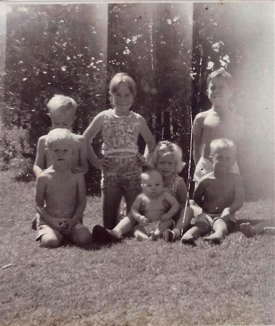
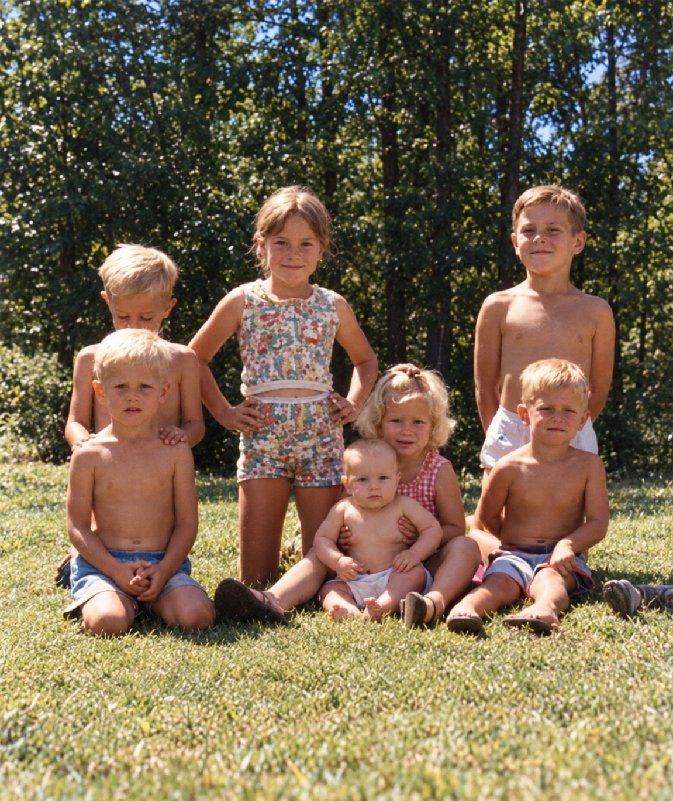

Childhood Memories Restored
Before: The original photograph shows fading, surface damage, and reduced contrast.
After: The restored version brings back color and visibility while preserving the children, their expressions, and the outdoor setting.